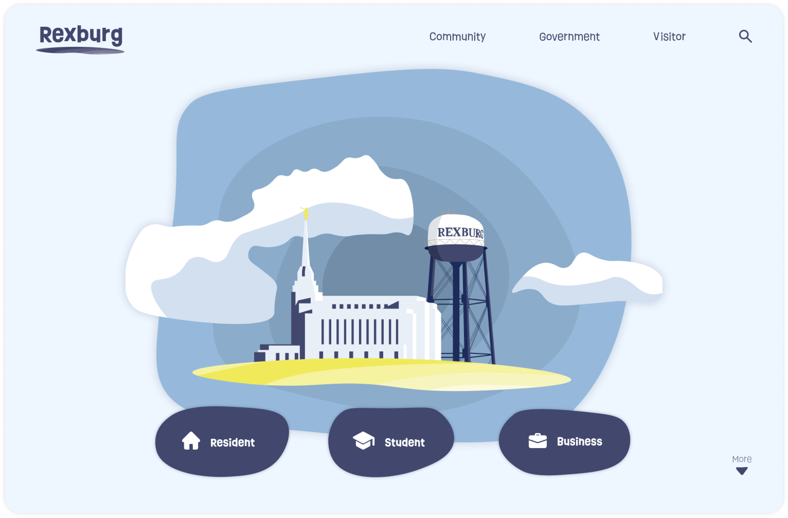
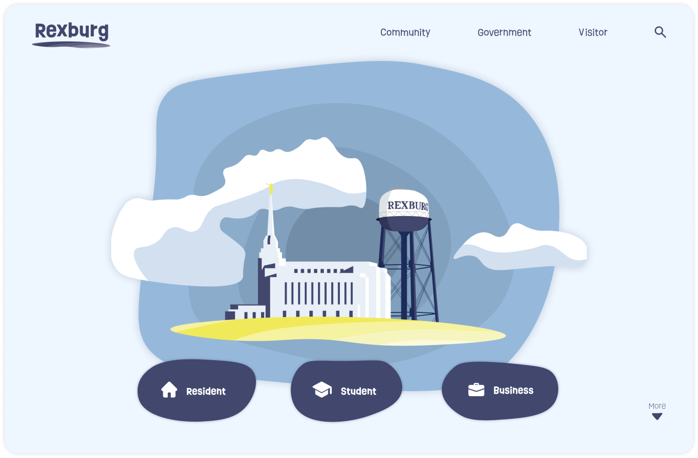
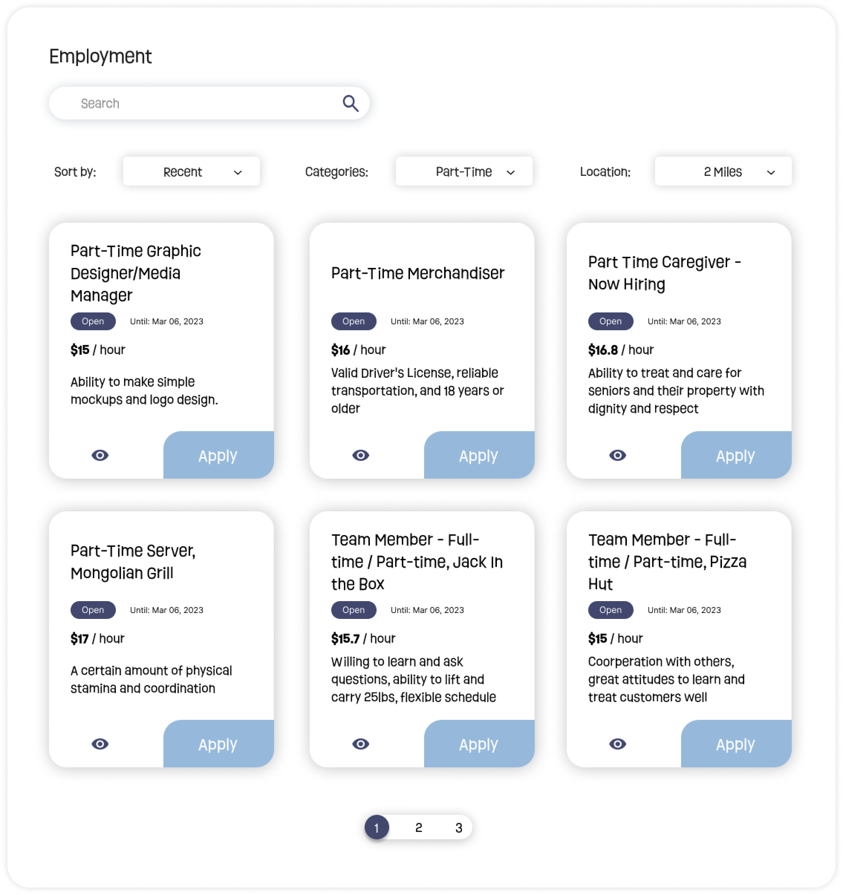
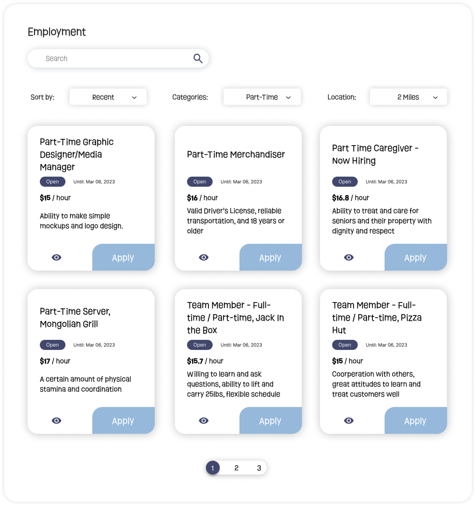

Team Members: Kwangyoung Ahn, Ana Salcedo, Kyle Cazier, Katy Macado, Hyrum Tibbitts, Taylor Elliett
My Role: Research, UX Design, UI Design, Prototyping
Year: 2022
Client: City of Rexburg

Rexburg is a small city with a population of 35,000. To promote economic development in the city, Rexburg Government wants to improve the website for business professionals, aiming to make business activities in Rexburg more vibrant.
Our team will conduct research on Rexburg's economic situation, business landscape, environment, potential, and more in order to design a product that provides the best possible experience for business-related customers.

The user traffic data for rexburg.org indicates that over the course of a month, the business-related category receives an average of 135 visitors. This equates to approximately 0.3125% of the total 43,266 visitors. From this, it is clear that a small fraction of users visit the site for business-related information.
Why are there so few business-related users?
To answer this question, we conducted a survey targeting local business people and students majoring in business at BYUI (Brigham Young University–Idaho).

This research has been legally authorized.

The first notable result we observed was that not many business-related individuals use rexburg.org. The reason for this is because they found other platforms to be more efficient.


People who have visited the website generally had negative experiences. Through the survey, we identified the following areas for improvement:
Considering the request we received from the city of Rexburg and the issues with the website, we have set the following goal:
To address the problem, we investigated what kind of business-related information the local people expect.


Through surveys and interviews, we found out that people access government websites to view materially necessary information such as documents and regulations.


Through analysis of the existing menu, we've established a direction for how to categorize the content.

We have decided on Starting, Manage, and Grow as the main categories within the business menu.
Starting is a category that houses menus necessary for those who are starting a new business in Rexburg. Here, one can obtain registration information and information about the business environment.
Manage is where existing Rexburg business people can find the materials they need. It is a place where one can get information related to all types of permits and taxes.
Grow contains information that can help them develop their business.

We created a site map based on the decided categories. It only includes business-related pages.
You want to start a new business in Rexburg. You start searching information about how to start doing it.
You are the owner of an online business and want to expand to a physical location in Rexburg.
You are currently a business owner of a physical location and are curious of expansion/general inquiries
We started setting up scenarios and creating wireframes.


We arranged a user testing session with BYUI business major students.
Firstly, we tracked how they navigated from a blank browser to achieve the goals set in the scenarios.
Secondly, we experimented with whether they could solve the scenarios using wireframes.
As a result, the users followed the paths we anticipated in all tests. Assuming that the local location is set in the Google search engine, rexburg.org was the first to be suggested and we confirmed that users could easily access rexburg.org.
In our wireframes as well, all users were able to achieve their goals in a very short time, which was incredibly successful. We analyzed that the reason for this success was the minimal variables, in other words, the clear path without confusing options helps users successfully find the content they want.
 


 


We presented our work to City of Rexburg gov website staffs. They liked our approach and design style, and they have agreed to incorporate our ideas extensively in the future rebuilding process of the Rexburg website.